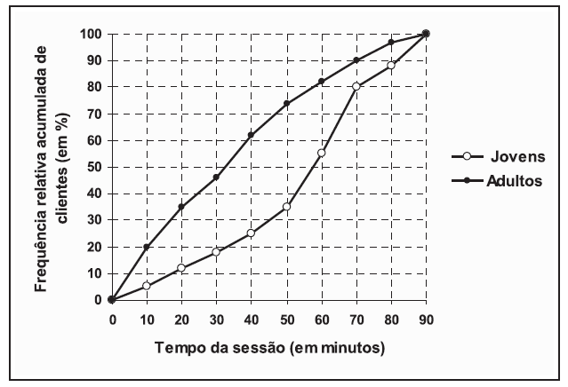
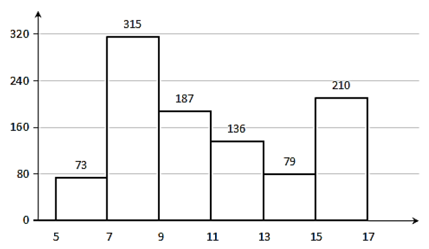
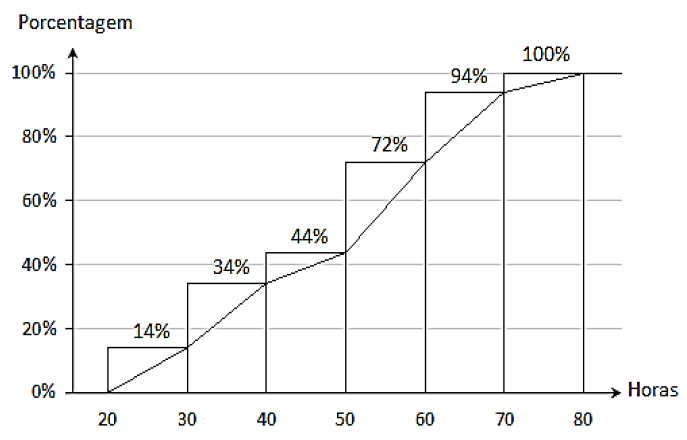
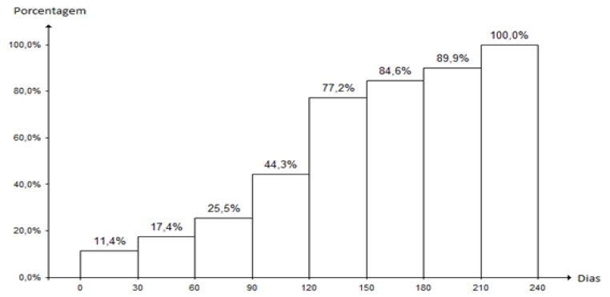
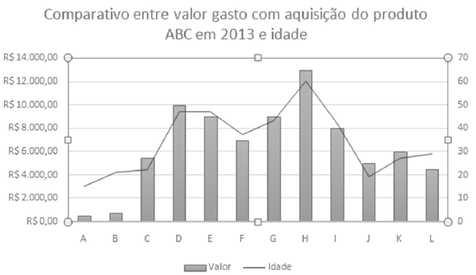
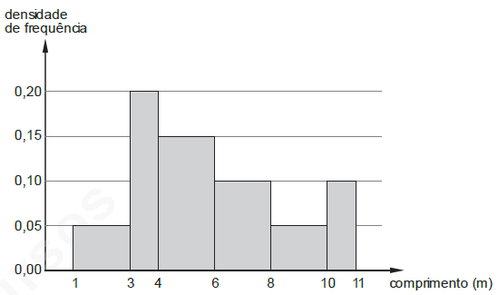
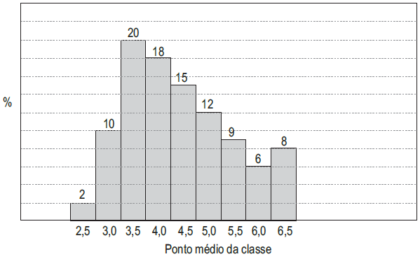

Questões fechadas
Abaixo estão algumas questões objetivas. Para ter acesso a mais questões, acesse sites como:
- PCI Concursos / Provas por Cargo - Procure pelos cargos de “Analista Judiciário - Estatística” e “Estatístico”.
- Exército Brasileiro / EsFCEx / Provas Anteriores - Procure por “ESTATÍSTICA”.
Se você for estudar realmente para um concurso, é importante lembrar que não é permitido o uso de calculadora durante a prova e, por isso, seu treino deverá ser feito a partir de cálculos manuais.
Conceitos básicos e interpretação de tabelas e gráficos
A análise exploratória de dados é a parte da Estatística que trata da organização, da apresentação, do resumo, da descrição dos dados e dos testes de hipóteses.
Comentários
Fonte: UFBA/UFRB - Técnico-Administrativo (Estatístico), 2009.
Leia o texto abaixo para responder às duas próximas questões.
A tabela representa o número de funcionários de uma empresa, classificados de acordo com idade e cidade de origem.
| Idade | Salvador | Simões Filho | Lauro de Freitas | Outros | Total |
|---|---|---|---|---|---|
| < 20 anos | 20 | 16 | 08 | 01 | 45 |
| 20 a 30 anos | 62 | 24 | 14 | 03 | 103 |
| > 30 anos | 34 | 14 | 03 | 01 | 52 |
| Total | 116 | 54 | 25 | 05 | 200 |
Com base nessas informações, pode-se concluir:
Nessa empresa, 31% dos funcionários são de Salvador e têm de 20 a 30 anos.
Comentários
Fonte: UFBA/UFRB - Técnico-Administrativo (Estatístico), 2009.
Corresponde a 35% o percentual de funcionários da empresa que são de Simões Filho ou de Lauro de Freitas.
Comentários
Fonte: UFBA/UFRB - Técnico-Administrativo (Estatístico), 2009.
O dono de uma lan house (loja que aluga computadores para acesso à internet) quer saber se o tempo de uso da internet por sessão é diferente entre seus clientes jovens e adultos. Para isso, ele contratou um Estatístico, que coletou uma amostra aleatória de clientes nos dois grupos e mediu o tempo, em minutos, que cada cliente gastou em sua sessão. Os dados coletados estão resumidos nas duas ogivas (dois polígonos de frequências acumuladas) mostradas na figura:

Com base no gráfico, o Estatístico pode concluir que
Comentários
Fonte: ENADE - Estatística, 2009.
Um estatístico resumiu os dados de uma amostra através do gráfico a seguir.

Sobre o gráfico, é CORRETO afirmar que é
Comentários
Fonte: TRT da 3ª Região - Analista Judiciário - Estatística, 2022.
Durante um processo industrial, foram observadas falhas. O engenheiro responsável anotou o instante exato de 250 ocorrências e, a seguir, resumiu os dados no gráfico a seguir.

Considerando o gráfico, é CORRETO afirmar:
Comentários
Fonte: TRT da 3ª Região - Analista Judiciário - Estatística, 2022.
Observe o gráfico a seguir. O Departamento de Controle de Qualidade da Indústria de Embalagens XLK Ltda. analisou um lote de 2000 produtos alimentícios, anotando o número total de produtos que apresentaram traços de deterioração ao longo de 240 dias.

Fonte: Departamento de Controle de Qualidade da XLK Ltda.
Após a análise dos dados, foram feitas as afirmações a seguir sobre o fenômeno:
- Afirmação I. Os dois períodos com maior índice de deterioração de produtos foram de 90 a 120 dias e de 120 a 150 dias.
- Afirmação II. No período de 60 a 120 dias, aproximadamente 540 produtos apresentaram traços de deterioração.
- Afirmação III. 120 produtos alimentícios apresentaram traços de deterioração ao término de 60 dias.
Está CORRETO apenas o que se afirma em:
Comentários
Fonte: TRT da 3ª Região - Analista Judiciário - Estatística, 2022.
As variáveis são características que podem ser observadas em cada elemento da população, sob as mesmas condições. Quanto à classificação das variáveis, é correto afirmar que elas podem ser
Comentários
Fonte: EBSERH/HUPES - UFBA - Analista Administrativo (Estatística), 2014.
Uma empresa contratou uma consultoria de estatística para realizar uma pesquisa em que foram avaliados o gasto com determinado produto por pessoa e a idade da pessoa no ano de 2013, para uma amostra de 12 pessoas. O gráfico com os resultados é apresentado seguir:

Com base no gráfico apresentado, assinale a alternativa correta.
Comentários
Fonte: EBSERH/HUPES - UFBA - Analista Administrativo (Estatística), 2014.
A distribuição das medidas em metros (m) dos comprimentos dos cabos no estoque de uma fábrica está representada pelo histograma mostrado abaixo, em que no eixo vertical constam as densidades de frequências, em m-1, e no eixo horizontal os intervalos de classe. Define-se densidade de frequência de um intervalo de classe como sendo o resultado da divisão da respectiva frequência relativa pela correspondente amplitude do intervalo.

Sabendo-se que todos os intervalos de classe são fechados à esquerda e abertos à direita, então a porcentagem dos cabos que apresentam uma medida de comprimento de pelo menos igual a 4 m e inferior a 10 m é de
Comentários
Fonte: TRT da 5ª Região - Analista Judiciário - Estatística, 2013.
Coeficientes de contingência
Uma pesquisa sobre a qualidade dos serviços prestados por uma grande operadora foi realizada com o envio de questionários a 400 usuários desses serviços. Cada usuário foi classificado como tendo perfil A ou B. Os resultados da pesquisa estão indicados abaixo.
| Opinião sobre os serviços | Perfil A | Perfil B | Total |
|---|---|---|---|
| Satisfeito | 200 | 100 | 300 |
| Insatisfeito | 100 | 0 | 100 |
| Total | 300 | 100 | 400 |
Com base nessas informações, julgue o item que se segue:
O valor da estatística qui-quadrado é igual a \(400 / 9\).
Comentários
Fonte: CODEBA - Estatístico, 2006.
Um estudo acerca de cursos de qualificação profissional envolveu a participação de 100 trabalhadores. A amostra foi classificada em função da rotatividade (número de empregos em até 30 dias após a realização do curso) e da opinião do trabalhador a respeito do curso (satisfação = 0, se o trabalhador entrevistado estava insatisfeito, ou satisfação = 1, se o trabalhador estava satisfeito com o curso realizado).
Os resultados desse estudo são apresentados na tabela a seguir.
| Satisfação | Rotatividade | Total | |
|---|---|---|---|
| 0 | 1 | ||
| 0 | 10 | 10 | 20 |
| 1 | 60 | 20 | 80 |
| Total | 70 | 30 | 100 |
Considerando essas informações, julgue os dois itens subsequentes.
O valor da estatística qui-quadrado do teste de independência entre a rotatividade e a satisfação é superior a 5.
Comentários
Fonte: TRT da 5ª Região - Analista Judiciário - Estatística, 2008.
O quadrado do coeficiente de contingência é superior a 0,5.
Comentários
Fonte: TRT da 5ª Região - Analista Judiciário - Estatística, 2008.
Medidas de tendência central e quantis
Considere a tabela a seguir referente ao tempo de espera de clientes em uma fila, em minutos:
| Tempo de espera (minutos) | Frequência (\(f_i\)) |
|---|---|
| \([0;5[\) | 10 |
| \([5;10[\) | 15 |
| \([10;15[\) | 8 |
| \([15;20[\) | 12 |
| \([20;25[\) | 5 |
| \([25;30]\) | 3 |
O valor da mediana estará no intervalo:
Comentários
Fonte: EsFCEx CFO/QC - Estatística, 2023.
Note que esta questão trata \(f\) como frequência absoluta, enquanto Murteira (1993) usa essa letra para denotar frequência relativa.
Seja a distribuição de frequências a seguir.
| Peso | Pacotes | % | Acumulado | % Acumulada |
|---|---|---|---|---|
| 0,960 a 0,969 | 7 | 3,66% | 7 | 3,66% |
| 0,969 a 0,978 | 35 | 18,32% | 42 | 21,99% |
| 0,978 a 0,987 | 41 | 21,47% | 83 | 43,46% |
| 0,987 a 0,996 | 79 | 41,36% | 162 | 84,82% |
| 0,996 a 1,005 | 13 | 6,81% | 175 | 91,62% |
| 1,005 a 1,014 | 16 | 8,38% | 191 | 100,00% |
| Total | 191 | 100,00% | – | – |
FONTE: Setor de Qualidade da Goodcoffe.
Considere as afirmações:
- Afirmação I. 21,99% dos pacotes possuem um peso entre 0,969 e 0,978 kg.
- Afirmação II. A mediana dos pesos dos pacotes é um valor dentro do intervalo de 0,987 a 0,996.
- Afirmação III. No máximo de 84,82% dos pacotes apresentam um peso inferior a 1 Kg.
Está CORRETO apenas o que se afirma em:
Comentários
Fonte: TRT da 3ª Região - Analista Judiciário - Estatística, 2022.
| Número de reclamações | 11 | 12 | 13 | 14 | 15 |
| % de dias | 40 | 30 | 20 | 5 | 5 |
Durante 150 dias, o SAC ― Serviço de Atendimento ao Cliente de uma rede de lojas ― fez uma pesquisa visando analisar as reclamações dos clientes, conforme os dados da tabela em destaque.
De acordo com os dados dessa tabela, o mínimo de 13 reclamações ocorreu em
Comentários
Fonte: IFBA - Analista Estatístico, 2010
Leia o texto abaixo para responder às duas próximas questões.
O histograma a seguir representa dados de uma determinada amostra, sendo que, no eixo horizontal, estão representados os pontos médios das classes, todas com a mesma amplitude e, no eixo vertical, as frequências relativas.

A probabilidade de um valor escolhido estar entre 4,25 e 6,25 é
Comentários
Fonte: IBGE - Estatístico, 2010
A estimativa obtida, por interpolação linear, para o valor que acumula uma probabilidade de no máximo 10% é
Comentários
Fonte: IBGE - Estatístico, 2010
Um assalariado gasta 55% do seu salário com alimentação, aluguel e transporte, sendo 25% com alimentação, 10%, com aluguel e 20% com transporte. Considere-se a hipótese de que, no período de 2007 a 2008, os preços desses itens variaram de acordo com os índices a seguir.
| Grupos | Índice acumulado 2007 a 2008 (%) | Peso (%) |
|---|---|---|
| Alimentação e bebidas | 25,0 | 25 |
| Habitação | 7,0 | 10 |
| Transportes | 4,5 | 20 |
Considerando que não houve aumento de salários nem modificação nas quantidades consumidas, que proporção do salário o trabalhador passou a comprometer com esses três itens?
Comentários
Fonte: IBGE - Estatístico, 2010
A companhia OH possui 17 empregados cujas idades são: 21, 35, 19, 33, 57, 60, 48, 34, 18, 19, 30, 24, 19, 21, 39, 53 e 32. Qual é a idade mediana dos empregados da companhia OH?
Comentários
Fonte: Prefeitura de Camaçari/BA - Estatístico, 2010
A tabela a seguir corresponde ao número de faltas de 50 alunos em um semestre, na Universidade X.
| Número de faltas | 0 | 1 | 2 | 3 | 4 | 5 |
| Quantidade de alunos | 14 | 9 | 7 | 6 | 9 | 5 |
Com base nesses dados, pode-se afirmar que os alunos tiveram, em média, 2,04 faltas nesse semestre.
Comentários
Fonte: UFBA/UFRB - Técnico-Administrativo (Estatístico), 2009.
O departamento de colocação profissional do Conselho Federal de Estatística resolveu fazer um levantamento com cinco graduados em estatística para avaliar a média de salário inicial, após sua colocação no mercado.
| Graduado | Salário (R$) |
|---|---|
| A | R$ 4.020,00 |
| B | R$ 3.940,00 |
| C | R$ 4.060,00 |
| D | R$ 3.756,00 |
| E | R$ 4.224,00 |
Com base na tabela de resultado do levantamento apresentada, assinale a alternativa que indica o salário inicial médio dos graduados.
Comentários
Fonte: EBSERH/HUPES - UFBA - Analista Administrativo (Estatística), 2014.
Considere a tabela abaixo para resolver às duas próximas questões, referente à distribuição de frequências relativas dos salários dos 400 empregados de uma empresa no mês de agosto de 2013, sabendo-se que \((m + n) = 10\%\).
| Classe de salários (R$) | Frequência relativa (%) |
|---|---|
| \([2.500, 3.500)\) | \(2m\) |
| \([3.500, 4.500)\) | \(5n\) |
| \([4.500, 5.500)\) | \(4m\) |
| \([5.500, 6.500)\) | \(6n\) |
| \([6.500, 7.500)\) | \(3m\) |
| Total | 100 |
O valor da média aritmética dos salários dos empregados foi obtido considerando-se que todos os valores incluídos num intervalo de classe são coincidentes com o ponto médio deste intervalo. O número de empregados correspondente ao intervalo de classe a que pertence o valor da média aritmética é igual a
Comentários
Fonte: TRT da 5ª Região - Analista Judiciário - Estatística, 2013.
Considerando que a mediana (\(m_{d}\)) e o primeiro quartil (\(q_{1}\)) da distribuição foram obtidos pelo método da interpolação linear, tem-se que a amplitude do intervalo \([q_{1}, m_{d}]\) é
Comentários
Fonte: TRT da 5ª Região - Analista Judiciário - Estatística, 2013.
Note que Murteira (1993) denota o primeiro quartil e a mediana por \(Q_{1}\) e \(\tilde{x}\), respectivamente.
Durante um período de 50 dias, observou-se a quantidade de determinada ocorrência por dia em uma indústria. O número de dias (\(f_{i}\)) em que aconteceram \(i\) ocorrências (\(0 \leq i \leq 4\)) pode ser encontrado com a utilização da fórmula \(f_{i} = −i^{2} + 6i + 4\). Obtendo os respectivos valores da média aritmética (Me), da mediana (Md) e da moda (Mo), da quantidade de ocorrências por dia, então é correto afirmar que
Comentários
Fonte: TRT da 5ª Região - Analista Judiciário - Estatística, 2013.
Murteira (1993) denota a média aritmética, a mediana e a moda por \(\bar{x}\), \(\tilde{x}\) e \(\dot{x}\), respectivamente.
Medidas de dispersão, assimetria e curtose
De uma amostra aleatória simples de 20 trabalhadores da construção civil, foram obtidos os seguintes valores da remuneração mensal, em salários-mínimos:
1, 3, 2, 2, 3, 4, 4, 3, 2, 1, 1, 1, 1, 2, 1, 2, 3, 2, 1, 1.
Considerando essas informações, julgue os próximos seis itens.
A remuneração média desses 20 trabalhadores é igual a 2 salários-mínimos, e o desvio padrão amostral é superior a 1 salário-mínimo.
Comentários
Fonte: TRT da 5ª Região - Analista Judiciário - Estatística, 2008.
A mediana da amostra é igual a 1 salário-mínimo.
Comentários
Fonte: TRT da 5ª Região - Analista Judiciário - Estatística, 2008.
O primeiro quartil é igual a 1 salário-mínimo.
Comentários
Fonte: TRT da 5ª Região - Analista Judiciário - Estatística, 2008.
A freqüência modal é igual ou superior a 2 salários-mínimos.
Comentários
Fonte: TRT da 5ª Região - Analista Judiciário - Estatística, 2008.
O coeficiente de assimetria é igual ou superior a zero.
Comentários
Fonte: TRT da 5ª Região - Analista Judiciário - Estatística, 2008.
A curtose é uma medida do grau de achatamento da distribuição, sendo definida em função do quarto momento central.
Comentários
Fonte: TRT da 5ª Região - Analista Judiciário - Estatística, 2008.